AI WORLD TOUR
自動化の
基本設計
4つの部品 SSOT Git PC を閉じても動かす
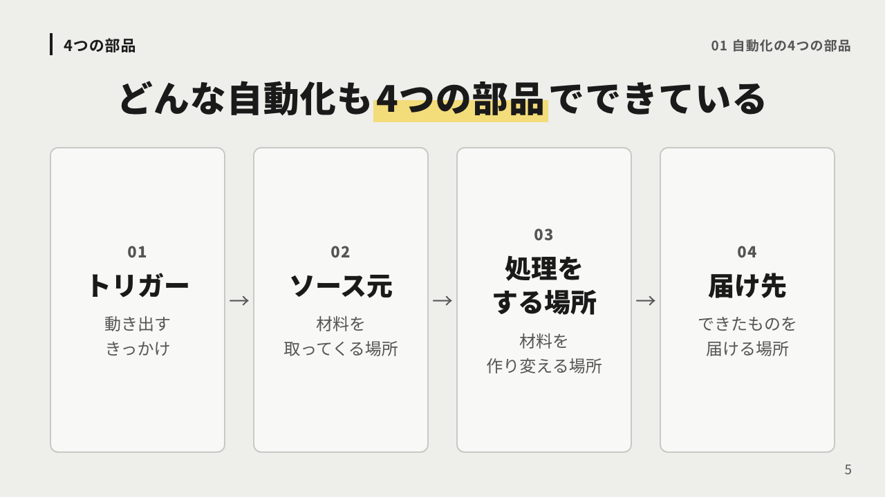
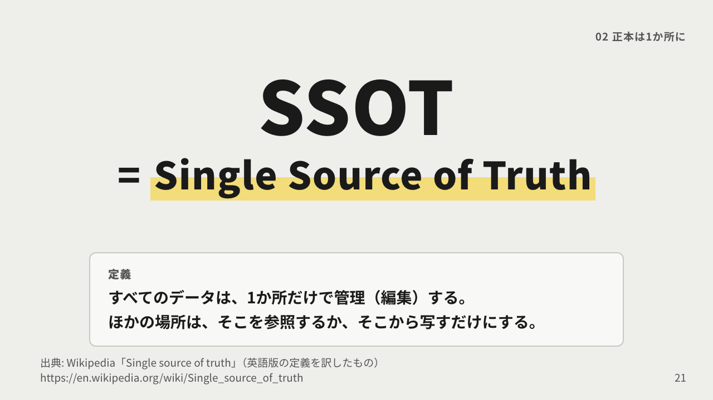
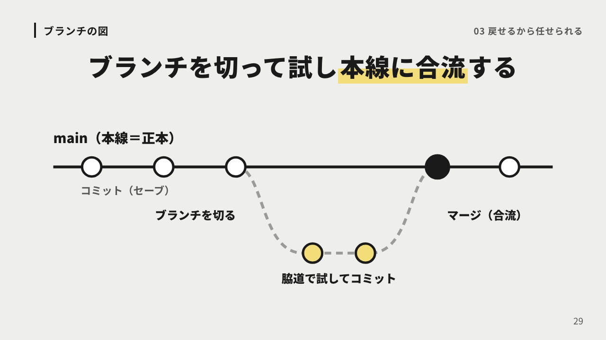
- 014つの部品
- 02SSOT
- 03Git
- 04PC を閉じても動かす
自動化って
何から考えればいい？
4つの部品を
順に決める
01
自動化の
4つの部品
はじめに
自動化と聞くと何が思い浮かびますか？
例
工場のロボット
同じ動きを
くり返す
例
Excel のマクロ
ボタン1つで
表を整える
例
自動返信
メールが届いたら
すぐに返す
こうなったら
こうなったらいいと思いませんか？
朝
PC を開くと
今日の予定と天気が
まとまって届いている
見積もり
依頼が来たら
下書きが
もうできている
在庫
減ってきたら
発注の時期を
知らせてくれる
4つの部品
どんな自動化も4つの部品でできている
01
トリガー
動き出す
きっかけ
02
ソース元
材料を
取ってくる場所
03
処理を
する場所
材料を
作り変える場所
04
届け先
できたものを
届ける場所
名前と役割
4つの部品の名前と役割
| 部品 | 役割 | 例 |
|---|---|---|
| トリガー | いつ 何が起きたら動き出すか | 毎朝7時になったら |
| ソース元 | 材料（データ）を取ってくる場所 | 天気予報のページ |
| 処理する場所 | 材料を作り変える所（AI が働く） | 3行にまとめる |
| 届け先 | できたものを届ける場所 | スマホ Slack |
よくある声
とはいえ 名前だけだと
ピンとこないですよね
レストランで言うと
伝票が入り 冷蔵庫から出して
作って運ぶ
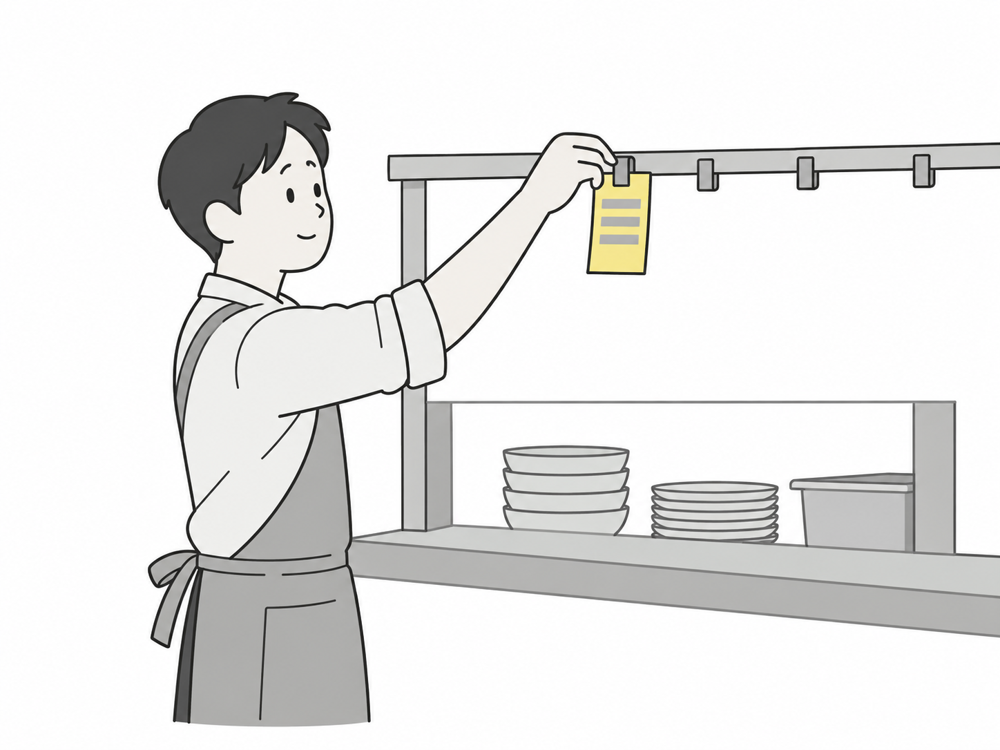
伝票
トリガー
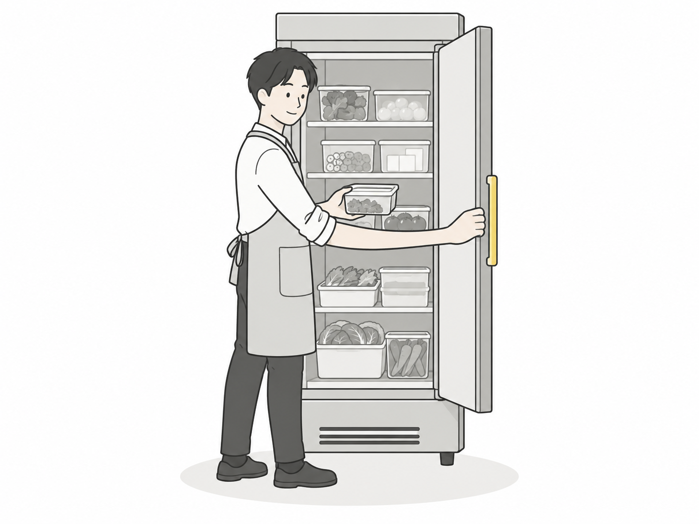
冷蔵庫
ソース元
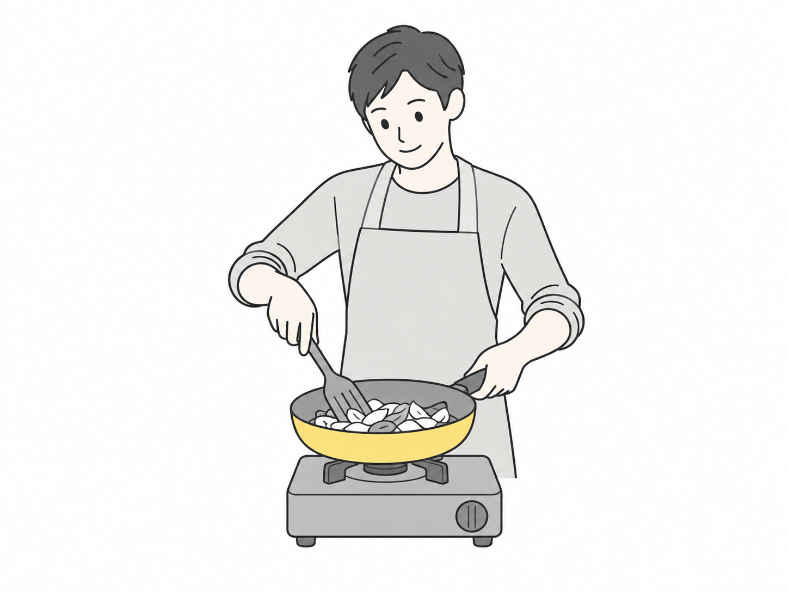
キッチン
処理する場所
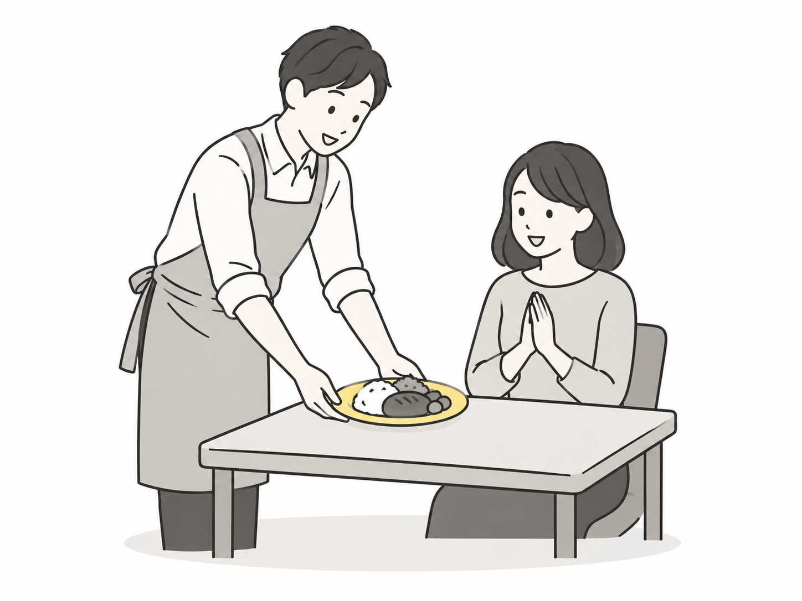
テーブル
届け先
トリガーがなければ
何も動かない
トリガーの種類
トリガーは4種類
01
時間
毎朝7時に
毎月1日に
02
出来事
メールが届いたら
ファイルが来たら
03
変化
値段が下がったら
基準を割ったら
04
人の合図
ボタンを押したら
話しかけたら
トリガーを置く場所
トリガーはいつも起きている所に置く
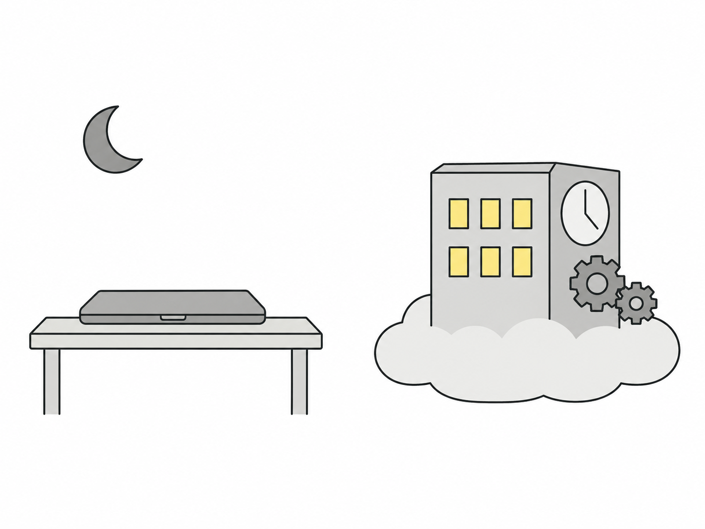
閉じた PC は動けない
いつも起きている所
クラウドに置く
- GitHub Actions
- Claude のルーティン
- 違いと選び方は 4章で
ソース元
ソース元は新しくないと意味がない
同じ材料からは 同じ結果しか出てこない
例
Web のページ
天気予報
お店の商品ページ
例
予定と表
カレンダー
スプレッドシート
例
写真とメール
レシートの写真
届いたメール
処理する場所
処理する場所で 材料に意味を持たせる
AI が働くのは ここ
01
まとめる
長い文章を
3行に
02
比べる
昨日と今日を
並べる
03
決める
基準を超えたか
見分ける
04
形を変える
表を図に
写真を文字に
届け先
届け先は毎日見る場所に
誰も開かない
フォルダに保存
できても 気づかれない
毎朝見る
Slack に届く
LINE メール Slack
例1 朝の天気と予定
毎朝7時に傘がいるかがスマホに届く
トリガー
毎朝7時
置き場所は
4章で
ソース元
天気予報
今日の予定
Web とカレンダー
処理する場所
AI が
まとめる
傘 服 出る時刻
を3行で
届け先
スマホ
LINE に届く
例2 値下がりを見張る
欲しい物が値下がりしたら知らせる
Playwright はブラウザを自動で動かす道具
トリガー
毎晩9時
見に行って
違ったら動く
ソース元
お店の
商品ページ
Playwright が
見に行く
処理する場所
昨日と
比べる
値段が下がった
時だけ先へ
届け先
メール
商品名と
新しい値段
まず4つの部品を書く
道具はあとで選ぶ
02
正本は
1か所に
よくある声
そもそも
正本って何？
正本とは
正本はこれが正しいと決めた元の1つ
コピーはいくつあってもいい 直すのは正本だけ
図面
最新の原図
現場には
コピーを配る
単価
単価表の最新版
見積もりは
ここを見る
予定
共有カレンダー
家族は
ここを見る
なぜ正本の話をするのか
自動化は確かめずに配る
人が見るなら
見比べて気づく
- 手帳とカレンダーが違う
- 「あれ？」と手が止まる
- 正しい方を聞きに行ける
自動化だと
決めた1か所だけ読む
- 手帳にだけ書いた予定は届かない
- 古い時刻のまま毎朝届く
- 誰も気づかないまま続く
予定が3か所にある家
予定が3か所にあると
どれが正しいか分からない
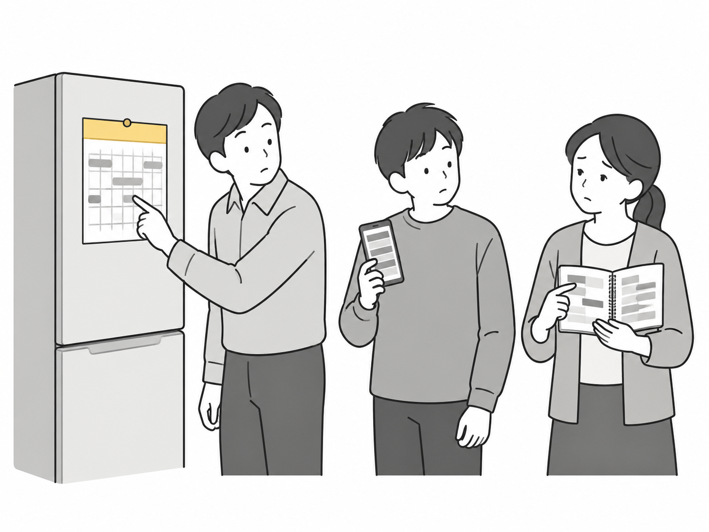
3か所
1か所
1か所にする理由
1か所にする理由は3つ
01
迷わない
どれが正しいか
すぐ分かる
02
直し漏れがない
直すのは
1か所で1回
03
配り間違えない
AI と仕組みが
正しい方を読む
SSOT= Single Source of Truth
定義
すべてのデータは、1か所だけで管理（編集）する。
ほかの場所は、そこを参照するか、そこから写すだけにする。
出典: Wikipedia「Single source of truth」（英語版の定義を訳したもの） https://en.wikipedia.org/wiki/Single_source_of_truth
SSOT の3つの約束
正本を決めてそこだけ直す
01
決める
正本はここと
決める
02
そこだけ直す
ほかの場所で
書き直さない
03
見に行く
ほかは
正本を読むだけ
ローカルとクラウド
正本はクラウドに置く
手元は写し
置き場所で役目を分ける
正本はみんなの所に
- 手元の PC は自分用の写し
- クラウドはみんなの正本
- 直したらクラウドに戻す
- 自動化はクラウドを読む
自動化と正本
ソース元が2つあると
AI は迷う
古い手帳を
読んでしまう
間違った予定が 毎朝届く
正本1か所
だけを読む
直せば 次の朝から正しくなる
直すのは正本だけ
コピーは読むだけ
03
戻せるから
任せられる
ゲームのセーブ
Git はセーブポイントの仕組み
いつでも 前の地点に戻れる
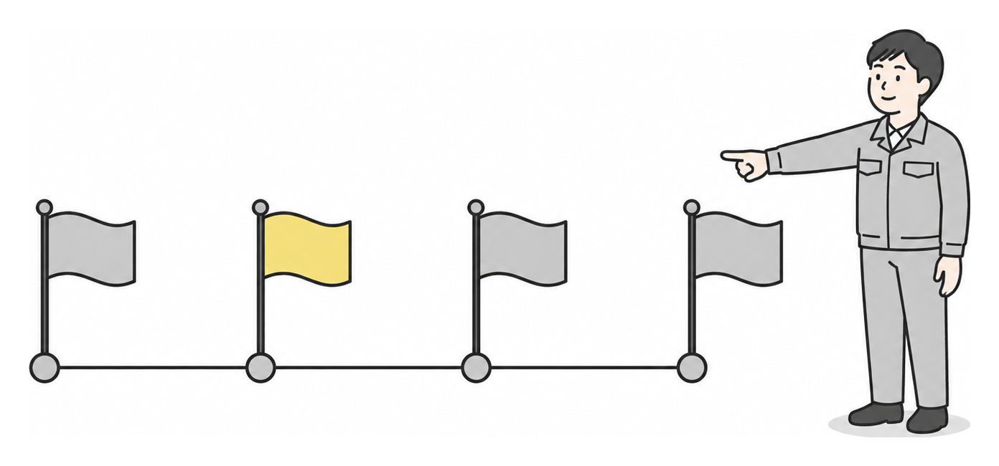
セーブの実例
直す前にセーブしておく
開発の現場では 小さく直すたびに 何を変えたか一言そえてセーブする
01
動いている
見積もりの
計算ツール
02
セーブ
直す前に
コミット
03
直したら
金額が
おかしくなった
04
戻す
直す前の
セーブに戻る
ブランチ
ブランチは別の道で試すこと
本線（main）を壊さずに 新しいことを試せる
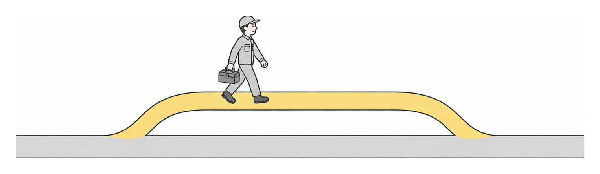
ブランチの図
ブランチを切って試し本線に合流する
開発の現場の1週間
急ぎの直しは別の脇道で先に合流
出典: Pro Git「Basic Branching and Merging」（急ぎの直しを別のブランチで行う例） https://git-scm.com/book/en/v2/Git-Branching-Basic-Branching-and-Merging
ブランチの使い分け
ブランチは目的ごとに切る
| こんなとき | ブランチの使い方 |
|---|---|
| 新しい機能を作る | 機能ごとに脇道を切り できたら本線に合流 |
| 動いている物に不具合 | 直す用の脇道を切り 急いで直して先に合流 |
| 案が2つで迷う | 2本の脇道で作って比べ 良い方だけ合流 |
| 合流の前に見てほしい | プルリクエストで もう1人が確かめてから合流 |
出典: GitHub Docs「GitHub flow」 https://docs.github.com/en/get-started/using-github/github-flow ／「Branches」
Git の操作
覚える操作は5つ
| 操作 | やること | たとえ |
|---|---|---|
| コミット | ここまでを記録する | セーブする |
| ブランチを切る | 本線から分かれて試す | 脇道を作る |
| マージ | 試した道を本線に戻す | 合流する |
| プッシュ | 記録を GitHub に送る | 倉庫に預ける |
| プル | GitHub の最新を受け取る | 倉庫から持ってくる |
よくある声
Git と GitHub って
何が違うの？
Git と GitHub
Git は手元の記録帳
GitHub はみんなの倉庫
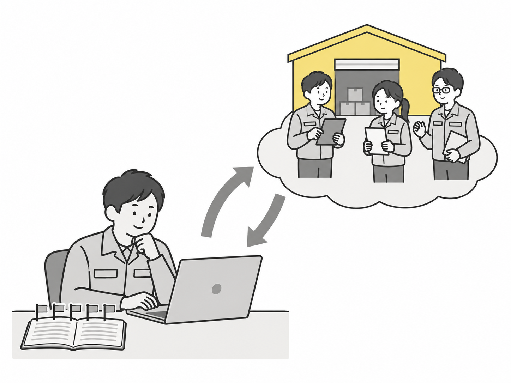
Git と GitHub の違い
GitHub は倉庫に道具が付いている
出典: GitHub Docs「What is GitHub?」 https://docs.github.com/en/get-started/start-your-journey/what-is-github
チームで進める
プッシュとプルで同じ正本を見る
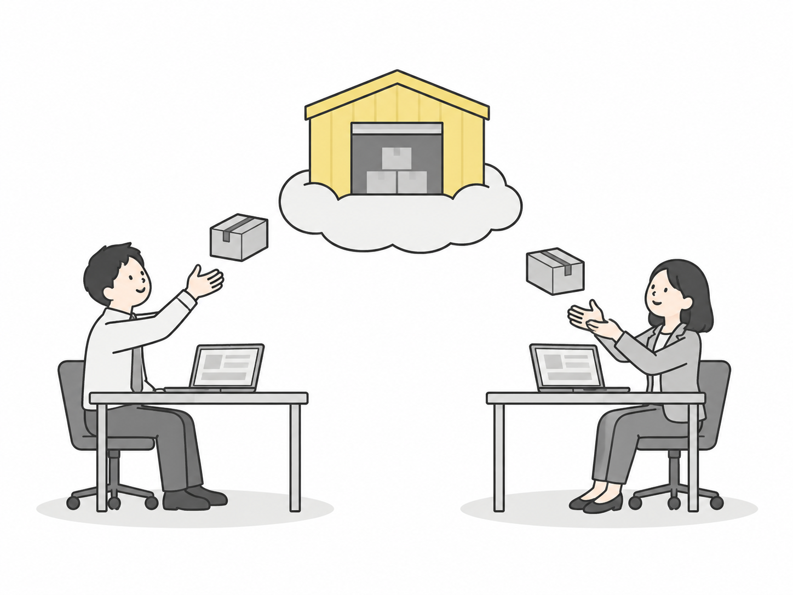
倉庫は1つ
2人で進めるとき
送って 受け取る
- Aさんが直してプッシュ
- 倉庫（GitHub）が新しくなる
- Bさんがプルで受け取る
- 2人とも同じ正本を見ている
チームの1日
受け取って 分かれて 記録して送る
01
プル
倉庫の最新を
受け取る
02
ブランチ
脇道を切って
作業する
03
コミット
こまめに
セーブする
04
プッシュ
倉庫に送って
本線に合流
Obsidian のメモを共有する
Obsidian のメモも一部だけ共有できる
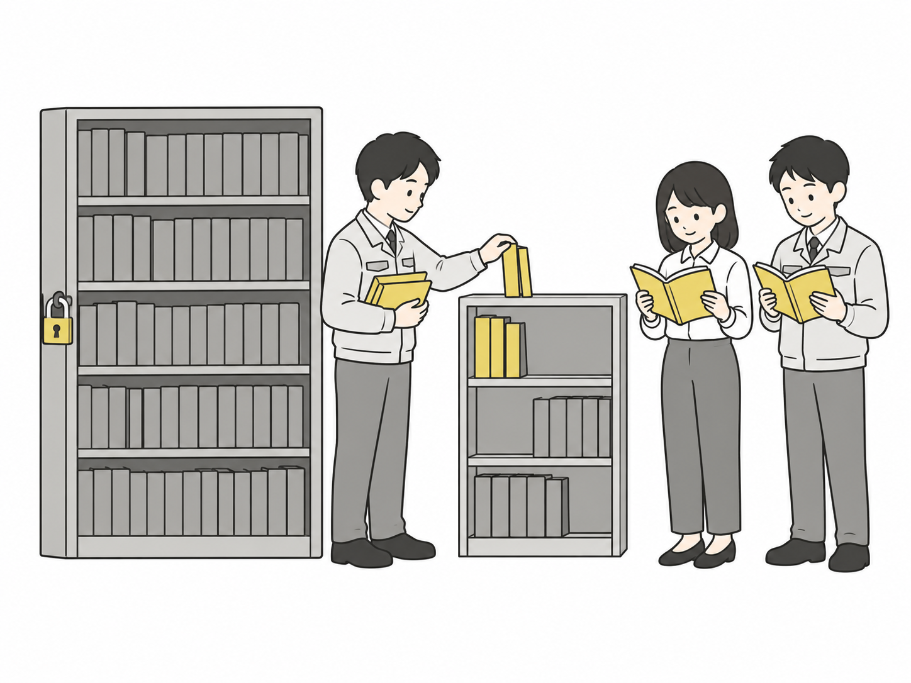
見せたい棚だけ
GitHub で管理すると
全部は渡さない
- メモ全体は自分の倉庫（非公開）
- 見せたいフォルダだけ別の倉庫に
- その倉庫に相手を招待する
- 見せない物は外す設定にする
なぜ自動化に Git か
仕組みの指示書も倉庫に置く
トリガーの設定も AI への指示も ただの文字のファイル
01
指示書を
書き直す
「平日9時に」
「この文を」
02
コミットと
プッシュ
記録して
倉庫に送る
03
倉庫で
動き出す
時間が来たら
GitHub で動く
04
壊れたら
昨日に戻す
セーブを
呼び出すだけ
Claude への頼み方
コマンドは覚えない
言葉で頼む
危ない言葉
この3つは頼む前に止まる
強制プッシュ
上書きして送る
倉庫にある
ほかの人の記録が消える
全部巻き戻す
記録の前に戻す
記録していない変更が
消える
公開にする
倉庫を公開する
世界中の誰でも
見られる
Git に入れないもの
鍵は Git に入れない
一度記録すると 消しても履歴に残る
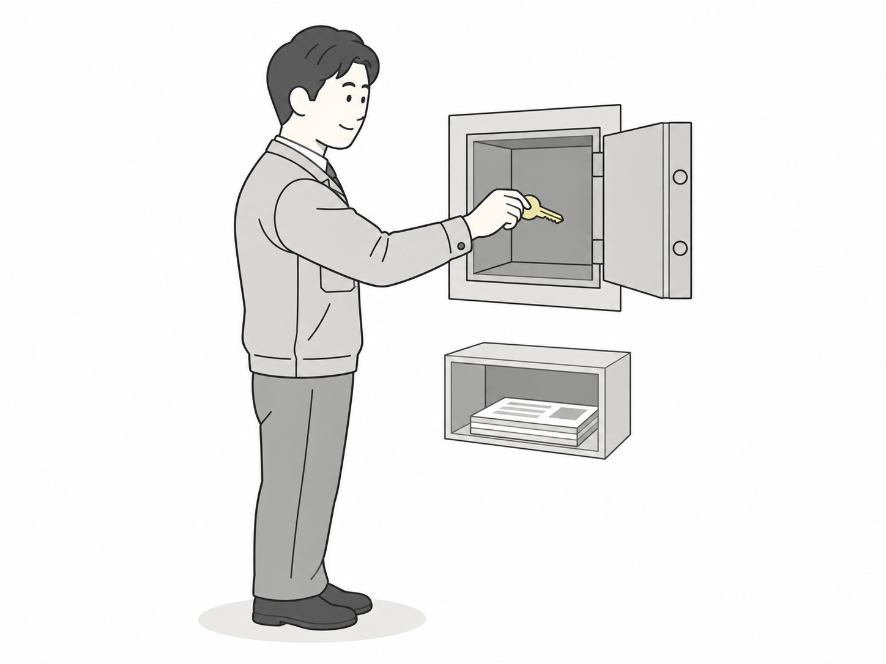
鍵は金庫へ
入れないもの
記録の外に置く
- パスワードや合言葉
- サービスの鍵や受け口の URL
- 人の名前や住所
- 大きな写真や動画
記録しておけば
AI に任せても怖くない
04
PC を閉じても
動かす
GitHub Actions とは
倉庫に置いた指示書どおりに動く
GitHub のパソコンで動く
どんな仕組みか
きっかけが来たら
手順を実行
- 指示書は倉庫に置く
- 自分の PC は閉じていてよい
- 非公開でも月2,000分まで無料
出典: GitHub Docs「GitHub Actions billing」 https://docs.github.com/en/billing/concepts/product-billing/github-actions ／「Events that trigger workflows」
GitHub Actions でできること
きっかけは倉庫の出来事と時間
| きっかけ | 動かすこと（開発の現場の例） |
|---|---|
| 送ったら（push） | テストを自動で回し 壊れた変更にすぐ気づく |
| 合流したら | サイトやアプリを公開する（デプロイ） |
| 決めた時間に（schedule） | 集計 通知 ページの見回り（Playwright） |
| 問い合わせが来たら（issues） | 印を付ける 担当を割り振る |
| ボタンを押したら | 好きなときに手で動かす（workflow_dispatch） |
出典: GitHub Docs「Events that trigger workflows」 https://docs.github.com/en/actions/reference/workflows-and-actions/events-that-trigger-workflows
GitHub Actions の注意
GitHub に置くトリガーは3つに気をつける
01
時刻は
世界標準時
日本時間を
指定して書く
02
混むと
遅れる
ぴったりの時刻に
動くとは限らない
03
手動の
ボタンもある
試すときは
押して動かす
出典: GitHub Docs「Events that trigger workflows」「Workflow syntax」 https://docs.github.com/en/actions/reference/workflows-and-actions/events-that-trigger-workflows
PC を閉じても動く場所
動かす場所は3つから選ぶ
| 動かす場所 | 道具の例 | PC を閉じたら |
|---|---|---|
| 自分の PC | デスクトップの予定タスク | 止まる |
| GitHub のパソコン | GitHub Actions | 動く |
| Anthropic のクラウド | Claude Code のルーティン Cowork の予定タスク | 動く |
出典: Claude Code Docs「Routines」 https://code.claude.com/docs/en/routines ／「Desktop scheduled tasks」／Claude ヘルプ「Schedule recurring tasks in Cowork」
よくある声
Claude のルーティンと
何が違うの？
GitHub Actions とルーティン
決まった手順か毎回考えるか
左が GitHub Actions 右が Claude のルーティン
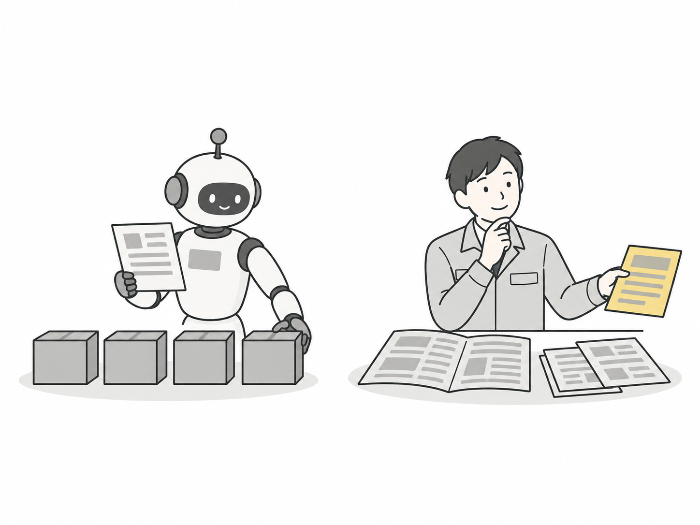
違いの一覧
同じ毎朝でも中身が違う
| GitHub Actions | Claude のルーティン | |
|---|---|---|
| 動くもの | 書いた手順をそのとおり | Claude が毎回考えて動く |
| 頼み方 | 指示書（YAML） | ふつうの文 |
| 得意なこと | 同じ処理を確実に 安く | 読んでまとめる 判断する |
| 費用 | 無料枠で足りることが多い | プランの使用量から引かれる |
| 気をつけること | 時刻が少し遅れることがある | 試験提供中 Slack は本人の名前で投稿 |
出典: Claude Code Docs「Routines」 https://code.claude.com/docs/en/routines ／GitHub Docs「GitHub Actions billing」
仕分け
やりたいことで道具を選ぶ
| やりたいこと | 向いている道具 |
|---|---|
| 決まった文を 決まった時間に送る | GitHub Actions |
| ページを読んで 要点を毎朝届けてほしい | ルーティン Cowork の予定タスク |
| 手元の PC のファイルを毎日整理する | デスクトップの予定タスク |
| 今すぐ1回だけ頼みたい | ふつうに Claude に頼む（人の合図） |
よくある声
設定画面を自分で触るのは
ちょっと不安…
ワークの進め方
設計は人 操作はAI
01 見る
AI が
画面を動かす
明日の天気を
調べてもらう
02 設計する
設計図を
4つで書く
トリガーから
届け先まで
03 任せる
作るのは
AI に任せる
人はログインと
鍵だけ
AI に画面を操作させる道具
画面の操作もAI に任せられる
| 道具 | どう動くか | 使える所 |
|---|---|---|
| Playwright MCP | 専用のブラウザを開いて操作 | Claude Code に足す （Node.js が要る） |
| Claude in Chrome | いつもの Chrome を操作 | 有料プランすべて |
| Computer use | 画面のアプリ全体を操作 | デスクトップアプリ （Pro と Max） |
出典: microsoft/playwright-mcp https://github.com/microsoft/playwright-mcp ／Claude ヘルプ「Getting started with Claude in Chrome」／Claude Code Docs「Desktop」
体験 AI にブラウザを動かしてもらう
明日の天気をAI に調べてもらう
AI が読んだページ
開く 探す 読むをAI が代わりに
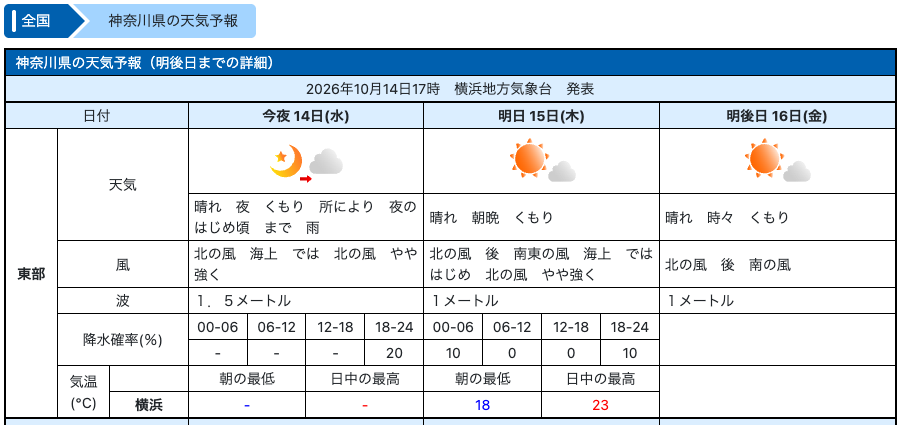
気象庁の天気予報
4つの部品で見ると
いまは手で頼んだ
- トリガー：人の合図
- ソース元：気象庁
- 処理する場所：Claude
- 届け先：この画面
出典: 気象庁「天気予報（神奈川県）」 https://www.jma.go.jp/bosai/forecast/#area_type=offices&area_code=140000 （2026年10月14日17時の発表を撮影）
任せる範囲
ログインと鍵は人が入れる
AI に任せる
画面の操作
- ページを開いて押していく
- 倉庫やファイルを作る
- 指示書を書いてセーブする
- ボタンを押して試す
人がやる
鍵とログイン
- ログイン（パスワード）
- 鍵を金庫に入れる
- 公開と送信の最後の OK
出典: Claude ヘルプ「Use Claude in Chrome safely」 https://support.claude.com/en/articles/12902428-use-claude-in-chrome-safely
今日の課題
毎日届いてほしい情報をSlack に流す
例 天気予報 業界ニュースの新着 自社サイトのお知らせ
01 決める
毎日ほしい
情報を1つ
それが
ソース元
02 設計する
設計図を
4つで書く
トリガーは
毎朝の時刻
03 任せる
AI に
作らせる
GitHub Actions
人はログインと鍵
04 確かめる
ボタンで
1回送る
Slack に
届けば完成
設計図の見本
毎朝 明日の天気がSlack に届く
トリガー
毎朝7時
GitHub Actions
ソース元
気象庁の
天気予報
神奈川県東部
処理する場所
形を整える
天気と降水確率を
1行に
届け先
Slack
自分用の
チャンネル
AI に作ってもらう
設計図を渡して作ってもらう
今日のまとめ
今日の話をふり返る
| 章 | 覚えておくこと |
|---|---|
| 01 4つの部品 | トリガー ソース元 処理する場所 届け先を順に決める |
| 02 正本は1か所に | 直すのは正本だけ 正本はクラウドに置く |
| 03 戻せるから任せられる | 直す前にセーブ 鍵は金庫 強制プッシュは止まる |
| 04 PC を閉じても動かす | 決まった手順は GitHub Actions 毎回考えるならルーティン |
| ワーク | 設計は人 操作は AI ログインと鍵は人が入れる |
宿題
1週間で 自分の仕事を設計図にする
01
見つける
「またこれか」と
思った仕事
02
分ける
4つの部品と
ソース元の正本
03
任せる
設計図を AI に
渡して作ってもらう
今日の答え
自動化は4つの部品から
答え
4つの部品を順に決める。ソース元は正本1か所に、仕組みは Git で記録する
理由 01
トリガーが無ければ
何も動かない
理由 02
ソース元が2つだと
AI が迷う
理由 03
記録があれば
壊しても戻せる